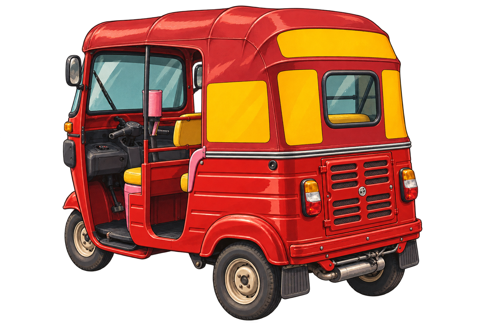

Discover
We learn about your business, audience, goals, and the action you want people to take.
FEATURED INNOVATION OVERVIEW
We are building Sri Lanka's first structured tuk tuk mobile billboard network. It turns daily street movement into a planned, creative brand presence.

THE IDEA
Instead of waiting in one place, a branded tuk tuk travels through the everyday moments of the city. We plan the creative, routes, and campaign execution around the audience you want to reach.
Branding created to read clearly on a moving vehicle and at a standstill.
Routes and areas chosen with your audience and campaign goal in mind.
One coordinated idea, with production, launch, and reporting considered together.
THE CITY IN MOTION
Picture a coordinated group of branded tuk tuks moving through real traffic, surrounded by the people and places your brand wants to reach.
Illustrative campaign animationCAMPAIGN EXECUTION
Our process keeps the strategy, creative work, and real world execution connected.
We learn about your business, audience, goals, and the action you want people to take.
We shape the message, visual approach, campaign areas, and movement plan.
We develop the vehicle creative, prepare production, and check the final branding.
Branded tuk tuks enter the selected city areas as a coordinated campaign.
We share campaign updates and visibility insights to guide what comes next.
BUILT AROUND YOUR AUDIENCE
A plan can focus on business districts, shopping areas, campuses, residential routes, or traffic corridors. We match the route to the people you want to reach.
Discuss Your CampaignTAKE YOUR MESSAGE FURTHER